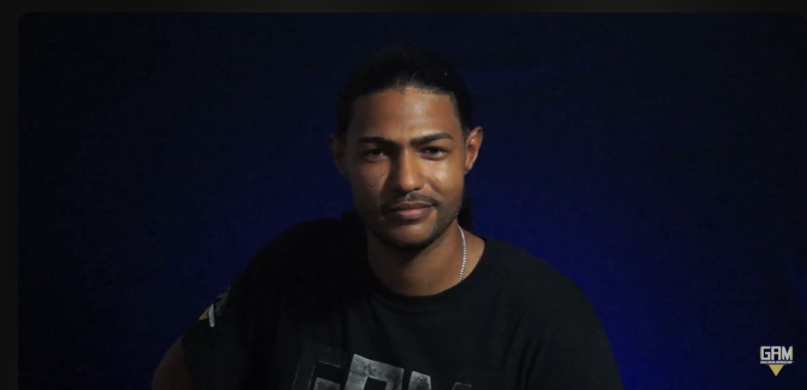

DR Rayuan se ha distinguido a lo largo de su carrera por ser una figura constante y aguerrida en el circuito de los juegos competitivos, ganándose el reconocimiento de sus pares por su agresividad táctica. Su participación frecuente en diversos eventos, tanto locales como internacionales, ha dejado en evidencia una capacidad técnica superior que lo coloca, por mérito propio, entre los jugadores más respetados y seguidos dentro del entorno competitivo nacional.
Además de su innegable destreza individual, su presencia ha sido un motor vital para el crecimiento y la difusión del interés por los eSports dentro de la República Dominicana. Su estilo de juego, caracterizado por una toma de decisiones audaz y precisa, sirve como ejemplo tangible de la evolución técnica y la madurez competitiva que exige la disciplina moderna de los juegos de video.